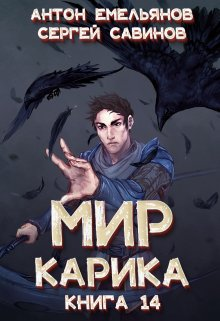

Когда-то основой мира были три силы: демиург и два его врага, один явный, а другой тайный. Но после того, как Карик захватил власть, равновесие было нарушено. Кто и как это сделал — неизвестно. Есть силы, которые хотят всё исправить, есть те, кто гонит мироздание в пропасть хаоса, а есть… Кот! И у него, в свою очередь, достаточно мозгов, а также стихий Зла, Обмана и, возможно, Смерти. А ещё у него отсутствует какое-либо желание плясать под чужие дудки.